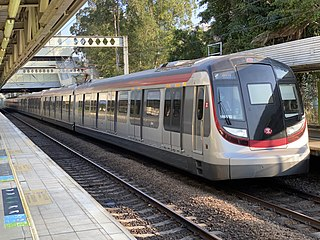
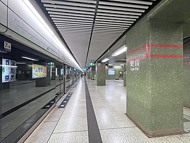
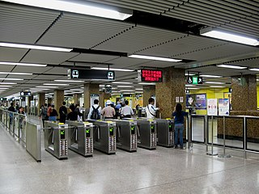
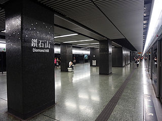
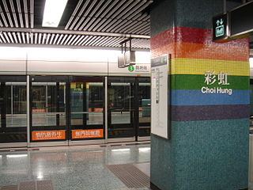
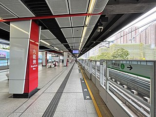

Railway in Wong Tai Sin
As a densely populated residential area, it is important to have a good public transport network in Wong Tai Sin. A major component of public transport in Hong Kong is the Mass Transit Railway (MTR) , and there are five stations allowing residents of different parts of Wong Tai Sin to travel to other areas in Hong Kong conveniently.
, and there are five stations allowing residents of different parts of Wong Tai Sin to travel to other areas in Hong Kong conveniently.

Photo credit: Kwok Ho Eddie Wong
Photo credit: Kwok Ho Eddie Wong

Photo credit: Wikimedia Commons, Qwer132477
Photo credit: Wikimedia Commons, Qwer132477
Lok Fu Station
- Serves residents in Lok Fu and Wang Tau Hom areas
- Connected to Lok Fu Place, a major shopping centre in the area
- Next to Lok Fu Recreation Ground; close to Morse Park
- Near Hong Kong Buddhist Hospital
Wong Tai Sin Station
- Serves residents in the central part of Wong Tai Sin, and also those in Chuk Yuen and Tsz Wan Shan
- Connected to Temple Mall, a major shopping centre in the area
- Next to Wong Tai Sin Temple, one of the tourist attractions in Hong Kong
- Close to Morse Park

Photo credit: Wikimedia Commons, WiNG
Photo credit: Wikimedia Commons, WiNG

Photo credit: Wikimedia Commons, Qwer132477
Photo credit: Wikimedia Commons, Qwer132477
Diamond Hill Station
- Serves residents in Diamond Hill and Hammer Hill areas
- Connected to Plaza Hollywood, a major shopping mall in the area
- Just next to Galaxia, a prominent private residential estate for the middle-class
- Become much more important after Tuen Ma Line is in use; passengers can now travel to the CBD of Hong Kong much more quickly from this station
Choi Hung Station
- Serves residents in Ping Shek and Ngau Chi Wan areas
- Connected with major minibus routes to Sai Kung, a countryside area good for vacation
- With buses connected to more remote areas in Wong Tai Sin and other parts of Kowloon, such as Shun Lee and Sau Mau Ping
- Meaning "rainbow" in Chinese, the station is having a raindow theme color

Photo credit: Wikimedia Commons, mailer_diablo
Photo credit: Wikimedia Commons, mailer_diablo

Photo credit: Wikimedia Commons, Qwer132477
Photo credit: Wikimedia Commons, Qwer132477
Kowloon Bay Station
- Located in the marginal area of Wong Tai Sin, also said to be in the nearby Kwun Tong district
- Connected to two major old middle-class private residential estates i.e. Telford Gardens and Amoy Gardens
- Close to the East Kowloon Cultural Centre, a new landmark cultural facility
- One of the few MTR stations located above ground, like the Skytrain stations in Vancouver, Canada